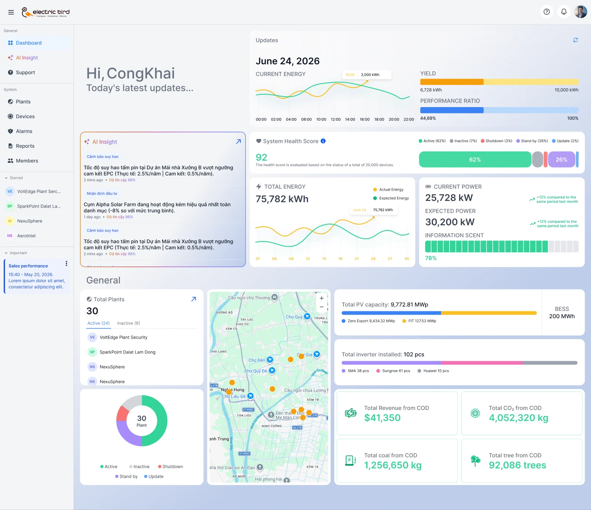

Dự án 01 | SaaS B2B
Từ báo cáo và tin nhắn Zalo đến một màn hình giám sát nhà máy điện mặt trời
Thiết kế nền tảng SaaS giám sát và quản lý hệ thống điện mặt trời có công suất đến 8 MW. Sản phẩm đã phát hành và đang chạy thật.

Khám phá
Hiểu bài toán
Trước dự án, công ty chưa có hệ thống nào. Tình hình các nhà máy được nắm qua báo cáo, hoặc qua nhân viên gọi điện và nhắn Zalo, nên quản lý không cập nhật ngay được khi có sự cố.
Người dùng chính là PM quản lý dự án và phía chủ đầu tư, mở hệ thống lên để xem hoạt động của dự án. Yêu cầu đến từ PM kèm các nguồn tham khảo PM cung cấp; tôi đọc và phân tích các nguồn đó để hiểu nghiệp vụ vận hành điện mặt trời.
Xác định
Chốt phạm vi thành 2 giai đoạn
Tôi và PM thống nhất sản phẩm xoay quanh việc gì, gồm những chức năng chính nào và tham khảo từ đâu.
- Phase 1, nền tảng chung (14 luồng): Dashboard, Reports, AI Insight, Performance map, 3D map, Notifications, Email template, Members, Phân quyền, Account setting, Log in, Mobile, Dark mode, 404.
- Phase 2, quản lý theo nhà máy: All Plants, chi tiết từng Plant (General, Analytics, Alarm, History, PV String), All Devices, Support.
Phát triển
Thiết kế và điều chỉnh
Vì sao dashboard sắp theo mức độ khẩn cấp
Mở dashboard lên, người dùng cần biết ngay chỉ số live của tất cả dự án đang chạy và có bất thường không. Nên biểu đồ live trong ngày đứng đầu, AI Insight và System Health Score (trên 20.000 thiết bị) đứng thứ hai, rồi mới tới biểu đồ theo kỳ và thông số chung. Đây là đề xuất của tôi.
Biểu đồ chi tiết hơn theo yêu cầu PM
Giữ biểu đồ Actual chồng lên Expected, nhưng thêm đường gióng giữa trục tung và trục hoành, ghi rõ đơn vị đo và khoảng cách thời gian trên trục để đọc số chính xác.
Bỏ đính kèm ảnh vì giới hạn kỹ thuật
Bản đầu có đính kèm ảnh trực tiếp trong thông báo sự cố. Tôi bỏ chức năng này vì dữ liệu camera nằm trong hệ thống riêng của chủ đầu tư, công ty không truy cập được dễ dàng.
Rút gọn flow đổi mật khẩu theo góp ý Backend
Bản đầu nhiều bước (email, OTP, mật khẩu cũ, xác nhận) vì tôi nghĩ nhiều bước an toàn hơn. Dev góp ý flow dài dễ bị ngắt giữa chừng. Flow mới gộp mật khẩu cũ, mới và xác nhận vào một màn, rồi xác minh OTP.
AI Insight Center là yêu cầu của PM. Tôi thiết kế cách hiển thị insight thành việc cần làm, ví dụ "cần vệ sinh panel" kèm nhãn Action required, và dự báo thời tiết ảnh hưởng sản lượng.
Bàn giao
UI Kit riêng, bàn giao và kiểm tra
- UI Kit riêng: ElectricBird được thiết kế trước khi công ty có ZEN.Kaiz PRO, nên tôi tự xây UI Kit gồm Colors, Text, Spacing, Icon. Trạng thái thiết bị (Active, Inactive, Shutdown, Stand by, Update) dùng một bộ màu nhất quán trên mọi biểu đồ; có Skeleton cho trạng thái đang tải.
- Bàn giao: file "Ready for Dev" tách riêng khỏi file thiết kế, có chú thích những điểm cần lưu ý; dev góp ý bằng comment trực tiếp trong file.
- Kiểm tra: PM và team họp hàng tuần để cùng xem bản dev làm và góp ý.
Đo lường
Chỉ số tôi đề xuất
Dự án chưa đo số liệu sau ra mắt. Tôi chọn chỉ số theo Goal, Signal, Metric: bắt đầu từ mục tiêu, tìm hành vi cho thấy mục tiêu đạt được, rồi mới chọn con số.
| Mục tiêu | Tín hiệu | Chỉ số đề xuất |
|---|---|---|
| PM biết sự cố sớm hơn | PM mở sự cố từ hệ thống, không chờ người báo | Thời gian từ lúc thiết bị báo lỗi đến lúc PM mở sự cố |
| Bỏ kênh hỏi đáp thủ công | Ít gọi điện, nhắn Zalo hỏi tình trạng | Số cuộc gọi, tin nhắn hỏi tình trạng mỗi tuần, so trước và sau |
| Dùng thường xuyên | PM, chủ đầu tư quay lại xem dashboard | Tỷ lệ người dùng đăng nhập hằng tuần |
| Tin vào số liệu | Xem, xuất báo cáo từ hệ thống thay vì nhận file | Số báo cáo được xem hoặc xuất từ hệ thống |
Định tính: phỏng vấn ngắn PM và chủ đầu tư sau một tháng dùng: còn phải hỏi qua Zalo không, số liệu nào chưa tin, phần nào trên dashboard ít khi nhìn tới.
Dự án tiếp theo